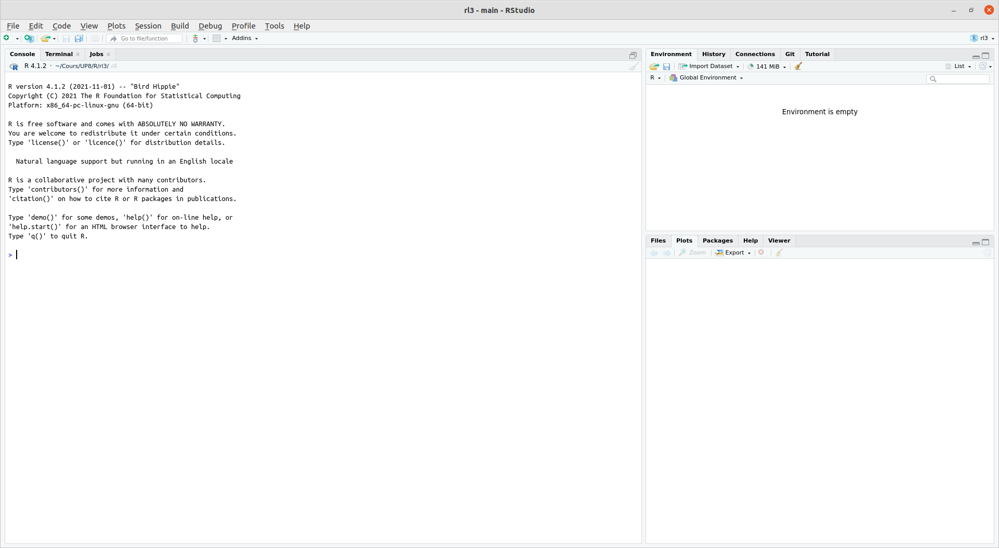

[1] 4Initiation à R
L3 économie-finance
Elias Bouacida
Université Paris 8
21 septembre 2022
Introduction générale
R ?
- R est un langage de programmation tourné principalement vers l’analyse des données et les statistiques. https://fr.wikipedia.org/wiki/R_(langage)
- Dérive d’un langage antérieur appelé S https://fr.wikipedia.org/wiki/S_(langage)
- R est un logiciel libre
Objectif du cours
- Apprendre à utiliser R et Rstudio
- Apprendre à utiliser les principales librairies (aussi appelées paquets) de R pour l’analyse de données et les statistiques
- Vous préparez à utiliser R dans d’autres cours
Déroulement du cours
- Une partie “cours” où nous discuterons des notions de programmation (en R)
- Une partie pratique où vous travaillerez sur machine
Le cours n’est pas noté, mais est validé par l’envoi de votre travail sur ordinateur
Installation
Le seul prérequis pour suivre ce cours est d’avoir accès à R et RStudio sur votre ordinateur
Il s’agit de deux logiciels libres, gratuits, téléchargeables en ligne et fonctionnant sous Windows, Mac et Linux.
Pour installer R, il suffit de se rendre sur une des pages suivantes :
RStudio
- Pour installer RStudio, rendez-vous sur ici et installez la version Desktop (gratuite) adaptée à votre système.
- Il faut installer R avant d’installer RStudio, sinon RStudio vous enverra une erreur.
- Vous pouvez aussi utiliser la version en ligne Rstudio.cloud, qui est très similaire à Rstudio.
- Vous trouverez plus d’informations sur l’installation de R et Rstudio sur le page Moodle du cours.
Cours
Le cours est construit à partir de deux ressources :
- Le manuel de Barnier (2022) (en français), que je vous conseille fortement de lire au fur et à mesure. Il est disponible sur Moodle.
- Les exercices développés par l’équipe swirldev (2022) (en anglais) et traduits et adaptés pour le cours, disponibles sur le dépôt Github
Quand vous avez un problème avec R, vous pouvez généralement trouvé sur internet la réponse à votre question, Stackoverflow est une bonne ressource pour cela.
Lancement de Rstudio
Une fois installé, pour lancer Rstudio, vous pouvez cliquer sur l’icône correspondante  ou bien rechercher l’application RStudio sur votre ordinateur
ou bien rechercher l’application RStudio sur votre ordinateur
Introduction à R
La console
Au premier lancement de RStudio, l’interface est organisée en trois grandes zones.
La zone de gauche se nomme la Console. À son démarrage, RStudio a lancé une nouvelle session de R et c’est dans cette fenêtre que nous allons pouvoir interagir avec lui.
Console
La Console affiche un texte de bienvenue suivi d’une ligne commençant par le caractère > (l’invite de commande).
Fournissons une première commande, en saisissant le texte suivant et en appuyant sur Entrée
Le symbole > réapparaît, et nous pouvons lancer d’autres opérations
Addition, Sousraction, Multiplication et Division
Résumé des principales opérations arithmétiques et du code R correspondant
| Math | code R |
Résultat |
|---|---|---|
| \(3 + 2\) | 3 + 2 |
5 |
| \(3 - 2\) | 3 - 2 |
1 |
| \(3 \times 2\) | 3 * 2 |
6 |
| \(3 \div 2\) | 3 / 2 |
1.5 |
Exposants
Utilisation des puissances et code R correspondant
| Math | code R |
Résultat |
|---|---|---|
| \(3^2\) | 3 ^ 2 |
9 |
| \(2^{(-3)}\) | 2 ^ (-3) |
0.125 |
| \(100^{1/2}\) | 100 ^ (1 / 2) |
10 |
| \(10^2\) | 1e2 |
100 |
| \(\sqrt{100}\) | sqrt(100) |
10 |
Constantes mathématiques
R connaît certaines constantes mathématiques
| Math | code R |
Résultat |
|---|---|---|
| \(\pi\) | pi |
3.141593 |
| \(e\) | exp(1) |
2.718282 |
Logarithmes
Il n’y a pas de ln() dans R, mais on utilise log() pour désigner le logarithme naturel.
log10() désigne le logarithme en base 10.
log(x, base) désigne le logarithme en base base quelconque.
| Math | code R |
Résultat |
|---|---|---|
| \(\ln(e)\) | log(exp(1)) |
1 |
| \(\log_{10}(1000)\) | log10(1000) |
3 |
| \(\log_{10}(1000)\) | log(1000, 10) |
3 |
Trigonometrie
Les fonctions trigonométriques existent aussi dans R
| Math | code R |
Résultat |
|---|---|---|
| \(\sin(\pi / 2)\) | sin(pi / 2) |
1 |
| \(\cos(0)\) | cos(0) |
1 |
Saisie des commandes
À de rares exceptions près, les espaces autour des commandes ne sont pas pris en compte. Les 3 commandes suivantes sont équivalentes :
La pratique standard est d’utiliser la deuxième ligne, afin d’avoir un code lisible
R bloqué
Il peut arriver qu’on saisisse une commande incomplète R remplace alors l’invite de commande > par un + Il attend qu’on lui donne des instructions.
On peut compléter la commande et appuyer sur Entrée ou annuler tout et appuyer sur Echap pour retourner à une invite de commande normale
Objets
Objets
Nous savons utiliser R comme une calculatrice, pour une utilisation plus avancée, on peut stocker le résultat d’un calcul dans un objet à l’aide de l’opérateur d’assignation <-. Cette “flèche” stocke ce qu’il y a à sa droite dans un objet dont le nom est indiqué à sa gauche.
Se lit “prend la valeur 2 et mets la dans un objet qui s’appelle x”.
Afficher la valeur d’un objet
Si on exécute une commande comportant juste le nom d’un objet, R affiche son contenu
Utilisation d’un objet
On peut évidemment réutiliser cet objet dans d’autres opérations : R le remplacera alors par sa valeur.
On peut créer autant d’objets qu’on le souhaite.
Si on assigne une nouvelle valeur à un objet, la valeur précédente est perdue.
Assigner un objet à un autre copie juste la valeur de l’objet de droite dans celui de gauche
Types
Chaîne de caractères
Les objets peuvent contenir tout un tas d’informations. Les valeurs prises peuvent être de différentes types.
Jusqu’ici on n’a stocké que des nombres, mais ils peuvent aussi contenir des chaînes de caractères (du texte), qu’on délimite avec des guillemets simples ou doubles (' ou ") :
Conditions logiques (booléens)
Ou encore des conditions logiques (TRUE ou FALSE) basées sur des comparaisons
On appelle TRUE et FALSE des booléens
Opérateurs logiques
| Opérateur | Résumé | Exemple | Résultat |
|---|---|---|---|
x < y |
x plus petit que y |
3 < 42 |
TRUE |
x > y |
x plus grand que y |
3 > 42 |
FALSE |
x <= y |
x plus petit ou égal à y |
3 <= 42 |
TRUE |
x >= y |
x plus grand ou égal à y |
3 >= 42 |
FALSE |
x == y |
x égal à y |
3 == 42 |
FALSE |
x != y |
x non égal à y |
3 != 42 |
TRUE |
!x |
non x |
!(3 > 42) |
TRUE |
x | y |
x ou y |
(3 > 42) || TRUE1 |
TRUE |
x & y |
x et y |
(3 < 4) && ( 42 > 13)1 |
TRUE |
À vous !
Swirl
Le moment est venu de mettre en pratique ce que nous avons vu.
La première chose à faire est d’installer le paquet swirl. Pour cela, copier-coller les lignes suivantes dans la console et taper entrée
Nous allons maintenant indiquer à swirl que nous souhaitons le voir en français
Cours et leçons swirl
swirl est un paquet (nous verrons cette notion plus tard) R qui permet de vous exercer de manière interactive à R
Chaque cours swirl est organisé en leçons centrée sur une notion précise
Vous pouvez vous procurer le cours sur Github, à cette adresse https://github.com/EliasBcd/InitiationR.
Nous pouvons le faire directement dans R, à l’aide de la commande suivante :
Lancer une leçon
Vous pouvez ensuite lancer le cours en tapant la commande swirl
L’invite de commande dialogue avec vous ! Elle vous demande un nom.
Tapez-le et gardez-le même tout au long du cours.1 Appuyez sur Entrée.
Lisez bien ce que R vous raconte et suivez ces instructions.
Quand R vous demande choisir un cours, tapez le numéro correspondant au cours “InitiationR” et appuyez sur Entrée.
Ensuite choisissez la première leçon (qui devrait être “Manipulations simples”).
Suivez maintenant les instructions de R dans l’invite de commande.
Fin d’une leçon
À la fin d’une leçon, swirl va vous proposer de soumettre votre progression.
Tapez le numéro correspondant à “Oui”, R devrait ouvrir votre navigateur internet sur une page Moodle ou vous pouvez soumettre le fichier .txt de la leçon que vous avez faites.
Réinstaller un cours
Si pour une raison ou pour une autre il y a besoin de réinstaller le cours, tapez les commande suivante :
Vecteurs
Vecteurs
Imaginons qu’on a demandé la taille en centimètres de 5 personnes et qu’on souhaite calculer leur taille moyenne.
On pourrait créer autant d’objets que de tailles et calculer la moyenne
Ce n’est clairement pas pratique du tout. On va plutôt stocker l’ensemble de nos tailles dans un seul objet, un vecteur, avec la syntaxe suivante :
où le c() veut dire “combine les valeurs suivantes dans un vecteur”
Si on affiche le contenu de cet objet, on voit qu’il contient bien l’ensemble des tailles saisies.
Opérations vectorielles
Si on applique une opération à un vecteur, celle-ci s’applique à toutes les valeurs qu’il contient.
Si on veut la taille en mètres plutôt qu’en centimètres, on peut faire :
Imaginons maintenant qu’on a aussi demandé aux cinq mêmes personnes leur poids en kilos.
On peut créer un deuxième vecteur :
On peut alors effectuer des calculs utilisant nos deux vecteurs tailles et poids.
On peut par exemple calculer l’indice de masse corporelle (IMC) de chacun de nos enquêtés en divisant leur poids en kilo par leur taille en mètre au carré :
Un vecteur peut contenir des nombres, mais il peut aussi contenir du texte.
Imaginons qu’on a demandé aux 5 mêmes personnes leur type de chien préféré : on peut regrouper l’information dans un vecteur.
Notons qu’on peut tester l’égalité des éléments d’un vecteur et d’un objet
Vecteurs numériques
L’opérateur : permet de générer rapidement un vecteur comprenant tous les nombres entre deux valeurs, opération assez courante sous R :
Si nous voulons créer une séquence qui ne soit pas limitée aux nombres entiers et qui augmente de 1 à la fois, nous pouvons utiliser la fonction seq().
Sous vecteurs
Pour extraire un sous-vecteur (subsetting), c’est-à-dire pour n’en choisir que certains éléments, nous utilisons des crochets, “[]”. Par exemple, x[1] renvoie le premier élément du vecteur x, et x[3] renvoie le troisième élément
Exclusions d’un vecteur
Nous pouvons également exclure certains indices, en les faisant précéder par un signe - .
Sous-ensemble
Enfin, on peut faire des sous-ensembles sur la base d’un vecteur d’indices.
Nous pourrions également utiliser un vecteur de valeurs logiques.
Ce qui est très pratique pour extraire un sous-vecteur des entrées respectant une condition logique :
Bases de données
Dans R, les bases de données sont des data.frame. Dans une data.frame, chaque variable est stockée comme une colonne, et chaque ligne est une observation.
Pour créer une data.frame, on utilise la commande data.frame() :
Il est possible d’avoir plusieurs bases de données ouvertes simultanément dans une session R. Pour se référer à une variable particulière d’une base, on utilise la syntaxe <nom de la base>$<nom de la variable>
Si on veut ajouter une variable à une base de données, on utilise la même syntaxe
Fonctions
Principes
Nous savons effectuer des opérations de base sur des nombres et des vecteurs, et stocker des valeurs dans des objets pour pouvoir les réutiliser plus tard.
Pour aller plus loin, nous devons aborder les fonctions qui sont, avec les objets, un deuxième concept de base de R. On utilise des fonctions pour effectuer des calculs, obtenir des résultats et accomplir des actions.
Formellement, une fonction a un nom, elle prend en entrée entre parenthèses un ou plusieurs arguments (ou paramètres), et retourne un résultat.
Prenons tout de suite un exemple. Si on veut connaître le nombre d’éléments du vecteur tailles que nous avons construit précédemment, on peut utiliser la fonction length(), de cette manière :
Ici, length() est la fonction, on l’appelle en lui passant un argument entre parenthèses (ici notre vecteur tailles), et elle nous renvoie un résultat, à savoir le nombre d’éléments du vecteur passé en paramètre.
Autre exemple, les fonctions min() et max() retournent respectivement les valeurs minimales et maximales d’un vecteur de nombres.
La fonction mean() calcule et retourne la moyenne d’un vecteur de nombres.
Une fonction peut renvoyer d’autres types de résultats. Par exemple, la fonction range() (étendue) renvoie un vecteur de deux nombres, le minimum et le maximum.
Arguments
Une fonction peut prendre plusieurs arguments, dans ce cas on les indique entre parenthèses en les séparant par des virgules.
On a déjà rencontré un exemple de fonction acceptant plusieurs arguments : la fonction c(), qui combine l’ensemble de ses arguments en un vecteur
Ici, c() est appelée en lui passant cinq arguments, les cinq tailles séparées par des virgules, et elle renvoie un vecteur numérique regroupant ces cinq valeurs.
Supposons maintenant que dans notre vecteur tailles nous avons une valeur manquante (une personne a refusé de répondre, ou notre mètre mesureur était en panne). On symbolise celle-ci dans R avec le code interne NA.
Valeurs manquantes
Si on calcule maintenant la taille moyenne à l’aide de la fonction mean(), on obtient :
En effet, R considère par défaut qu’il ne peut pas calculer la moyenne si une des valeurs n’est pas disponible. Dans ce cas il considère que la moyenne est elle-même “non disponible” et renvoie donc NA comme résultat.
On peut cependant indiquer à mean() d’effectuer le calcul en ignorant les valeurs manquantes. Ceci se fait en ajoutant un argument supplémentaire, nommé na.rm (abréviation de NA remove, “enlever les NA”), et de lui attribuer la valeur TRUE.
Mettre le paramètre na.rm à TRUE indique à la fonction mean() de ne pas tenir compte des valeurs manquantes dans le calcul.
Aide sur une fonction
Il est fréquent de ne pas savoir (ou d’avoir oublié) quels sont les arguments d’une fonction, ou comment ils se nomment. On peut à tout moment faire appel à l’aide intégrée à R en passant le nom de la fonction (entre guillemets) à la fonction help().
On peut aussi utiliser le raccourci ?mean.
Ces deux commandes affichent une page (en anglais) décrivant la fonction, ses paramètres, son résultat, le tout accompagné de diverses notes, références et exemples. Ces pages d’aide contiennent à peu près tout ce que vous pourrez chercher à savoir, mais elles ne sont pas toujours d’une lecture aisée.
Scripts
Regrouper ses commandes dans des scripts
Jusqu’ici on a utilisé R de manière “interactive”, en saisissant des commandes directement dans la console. Ce n’est pas très pratique pour sauvegarder son travail. De lorsque
Rou RStudio redémarre, tout ce qui a été effectué dans la console est perdu.On va plutôt regrouper les commandes dans des scripts (de simples fichiers texte), qui vont garder une trace de toutes les opérations effectuées. En rouvrant les scripts et en réexécutant les commandes qu’ils contiennent on pourra “reproduire” le chargement des données, leur traitement, les analyses et leurs résultats.
Pour créer un script, il suffit de sélectionner le menu File, puis New file et R script. Une quatrième zone apparaît alors en haut à gauche de l’interface de RStudio. On peut enregistrer notre script à tout moment dans un fichier avec l’extension .R, en cliquant sur l’icône de disquette ou en choisissant File puis Save.
Un script est un fichier texte brut, qui s’édite de la manière habituelle. À la différence de la console, quand on appuie sur Entrée, cela n’exécute pas la commande en cours mais insère un saut de ligne.
Pour exécuter une commande dans un script, il faut positionner le curseur sur la ligne de la commande en question, et de cliquer sur le bouton Run dans la barre d’outils juste au-dessus de la zone d’édition du script. On peut aussi utiliser le raccourci clavier Ctrl + Entrée (Cmd + Entrée sous Mac). On peut aussi sélectionner plusieurs lignes avec la souris ou le clavier et cliquer sur Run (ou utiliser le raccourci clavier), et l’ensemble des lignes est exécuté d’un coup.
Au final, un script pourra ressembler à quelque chose comme ça :
Commentaires
Les commentaires sont un élément très important d’un script. Il s’agit de texte, ignoré par R, et qui permet de décrire les étapes du script, sa logique, les raisons pour lesquelles on a procédé de telle ou telle manière… Il est primordial de documenter ses scripts avec des commentaires, car il est très facile de ne plus se retrouver dans un programme qu’on a produit soi-même, même après une courte interruption.
Pour ajouter un commentaire, il suffit de le faire précéder d’un ou plusieurs symboles #. En effet, dès que R rencontre ce caractère, il ignore tout ce qui se trouve derrière, jussqu’à la fin de la ligne.
On peut donc documenter le script précédent :
# Saisie des tailles et poids des enquêtés
tailles <- c(156, 164, 197, 147, 173)
poids <- c(45, 59, 110, 44, 88)
# Calcul des tailles et poids moyens
mean(tailles)
mean(poids)
# Calcul de l'IMC (poids en kilo divisé par les tailles en mètre au carré)
imc <- poids / (tailles / 100) ^ 2
# Valeurs extrêmes de l'IMC
min(imc)
max(imc)Paquets
Installer et charger des extensions (packages)
L’installation de base de R permet de faire énormément de choses, mais le langage dispose en plus d’un système d’extensions permettant d’ajouter facilement de nouvelles fonctionnalités. La plupart des extensions sont développées et maintenues par la communauté des utilisateurs et utilisatrices de R, et diffusées via un réseau de serveurs nommé CRAN (Comprehensive R Archive Network).
Pour installer une extension, si on dispose d’une connexion Internet, on peut
- Cliquer sur le bouton Install de l’onglet Packages de RStudio.
- Il suffit alors d’indiquer le nom de l’extension dans le champ Package et de cliquer sur Install.
On peut aussi installer des extensions en utilisant la fonction
install.packages()directement dans la console. Par exemple, pour installer le packageggplot2on peut exécuter la commande
- Une fois l’extension installée, il faut la “charger” avant de pouvoir utiliser les fonctions qu’elle propose. Ceci se fait avec la fonction
library(). Par exemple, pour pouvoir utiliser les fonctions deggplot2, vous devrez exécuter la commande suivante :
Ainsi, on regroupe en général en début de script toute une série de commandes library() qui permettent de charger tous les packages utilisés dans le script. Quelque chose comme
Références
Bibliographie
Barnier, Julien. 2022. « Introduction à R ». https://doi.org/10.5281/zenodo.6382599.
swirldev. 2022. « Basic R programming ». https://github.com/swirldev/R_Programming_E.